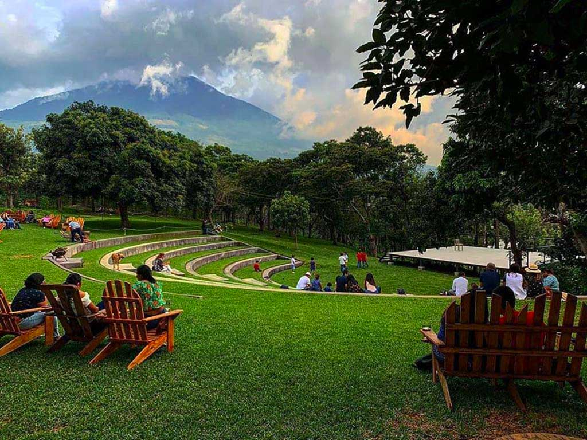
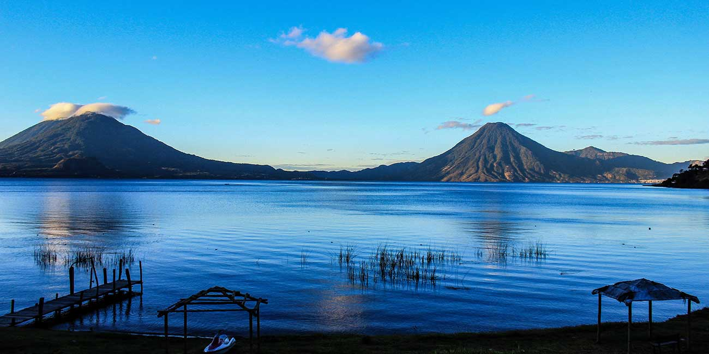

Recomendación de lugares
Llena los campos y te daremos la mejor recomendación de lugares
Los favoritos de todos :)

Cervecería 14
Categoría: Amigos
Tipo: Diversión
Dirección: Km 51.5 RN10, Camino a San Miguel Dueñas, Cd Vieja
Calificación: 4.8/5.0
Ciudad Cayalá
Categoría: Amigos/Familia
Tipo: Diversión
Dirección: Zona 16
Calificación: 4.7/5.0

Atitlán
Categoría: Familia
Tipo: Diversión
Dirección: Km 51.5 RN10, Camino a San Miguel Dueñas, Cd Vieja
Calificación: 4.5/5.0
Hobbitenango
Categoría: Amigos
Tipo: Diversión
Dirección: Km 51.5 RN10, Camino a San Miguel Dueñas, Cd Vieja
Calificación: 4.0/5.0